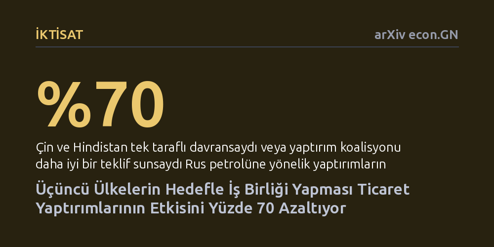

IKTISAT · arXiv econ.GN · 2026-10-20
Çalışma, yaptırım uygulayan, hedef alınan ve tarafsız kalan üçüncü aktörlerin bulunduğu çok kutuplu bir ticaret modelinde yaptırımların etkinliğini inceledi. Modelin Rus petrolüne uygulanması, Çin ve Hindistan'ın Rusya ile iş birliğinin yaptırımların etkinliğini yaklaşık yüzde 70 düşürdüğünü gösterdi.
Yaptırımların başarısının yalnızca hedef ülkeyi cezalandırmaya değil, tarafsız kalan üçüncü aktörlere hedef ülkeden daha cazip ekonomik teklifler sunabilmeye bağlı olduğunu ortaya koyuyor.

Geleneksel olarak ekonomik yaptırımlar iki taraflı bir mücadele gibi düşünülür: Bir tarafta kuralları koyan ve cezalandıran ülke, diğer tarafta ise hedef tahtasındaki ülke yer alır. Oysa bugünün küreselleşmiş ve çok kutuplu dünyasında ticaret akışları tek bir kanaldan akmıyor. Bir ülke ticaret kapılarını kapattığında, kenarda durup gelişmeleri izleyen üçüncü ülkeler devreye giriyor. Bu ülkelerin takınacağı tutum, yaptırımların kaderini baştan aşağı belirleyebilecek bir ağırlığa sahip.
Batı ülkelerinin Rusya'ya uyguladığı petrol yaptırımları bu durumun en somut örneği oldu. Rusya petrolünü Batı pazarlarına satamazken, bu petrolü satın alabilecek Hindistan ve Çin gibi devasa ekonomiler kenarda bekliyordu. Yanıtlanması gereken asıl soru şuydu: Yaptırım uygulayan taraf ile hedef ülke bu üçüncü aktörleri yanına çekmek için rekabet ettiğinde ne olur ve tarafsız ülkelerin varlığı yaptırımların gerçek gücünü nasıl değiştirir?
Araştırmacılar Jan Morgan ve Anchi Xia, bu soruyu yanıtlamak için üç stratejik aktörden oluşan yeni bir ticaret yaptırımı modeli kurdu: Yaptırımcı, hedef ve tarafsız kalan üçüncü taraf. Modelde tarafsız taraf tamamen serbest hareket edebiliyor; isterse tek başına bağımsız kararlar alıyor, isterse de katılım kısıtları çerçevesinde iki taraftan biriyle ittifak kurabiliyor.
Yazarlar sadece soyut matematiksel denklemlerle yetinmedi; kurdukları teorik modeli Rus ham petrolüne uygulanan yaptırımların gerçek piyasa verileriyle eşleştirerek kalibre etti. Bu yöntem sayesinde Hindistan, Çin ve Rusya arasındaki ticaret akışlarının modelin öngörüleriyle ne derece örtüştüğü simüle edildi ve farklı senaryolar altında yaptırımların ne kadar başarılı olabileceği hesaplandı.
Çalışmanın en çarpıcı bulgusu, üçüncü aktörlerin davranışının yaptırımların gücünü nasıl erittiğini ortaya koyuyor. Kalibrasyon sonuçlarına göre, Çin ve Hindistan'ın Rusya ile kurduğu fiili iş birliği modeli, gerçek piyasa verileriyle en iyi eşleşen senaryo oldu. Bu durum, Rusya'nın petrolünü indirimli fiyatlarla bu ülkelere yönlendirerek yaptırımların yıkıcı etkisinden büyük oranda kaçabilmesini sağladı.
Hesaplamalar, yaptırımların çok daha sert sonuçlar doğurabileceğini gösteriyor: "Sanctions could have been roughly 70% more effective had China and India acted unilaterally or had the sanctioning coalition made them a better offer." Ancak yaptırım uygulayan taraf üçüncü ülkeleri kendi saflarına çekecek ekonomik teşvikleri sunamadığı için Rusya sunduğu indirimli petrol transferleriyle bu aktörleri kendi tarafında tutmayı başardı.
Teorik model ayrıca koalisyon ortaklarının tarife politikalarına dair iki önemli mekanizma ortaya koydu. İlk olarak, bir koalisyonun üyeleri, kararlarını art arda aldıklarında ya da aralarındaki kaynak transferi kusursuz işlemediğinde zorunlu olarak farklı gümrük tarifeleri uyguluyor. İkinci olarak, yaptırımlar sıkılaştıkça, taraflar arasındaki stratejik etkileşimler sayesinde yaptırımcı ülkenin ekonomik refahı, tek taraflı optimum ticaret hadlerinin bile üzerine çıkabiliyor.
Bu sonuçlar, modern dünyada yaptırımların sadece hedef ülkeyi cezalandırmaya odaklanarak tasarlanamayacağını gösteriyor. Yaptırım uygulayan ülkeler, kenarda duran üçüncü tarafların sadece uyarılarla veya ahlaki çağrılarla hizaya sokulamayacağını anlamak zorunda. Çünkü hedef ülke, yaptırımların baskısını kırmak için tarafsız ülkelere cazip ekonomik transferler ve indirimler sunarak onları kendi yanına çekebiliyor.
Dolayısıyla yaptırımların başarılı olabilmesi, tarafsız kalan aktörlere hedef ülkenin sunduğu avantajlardan daha fazlasını teklif edebilme kapasitesine bağlı. Küresel ticaretin çok kutuplu yapısında yaptırım uygulamak, yalnızca iki ülke arasındaki bir güç gösterisi değil, üçüncü tarafların ekonomik bağlılığını kazanmaya yönelik çok aktörlü bir ihale rekabetidir.